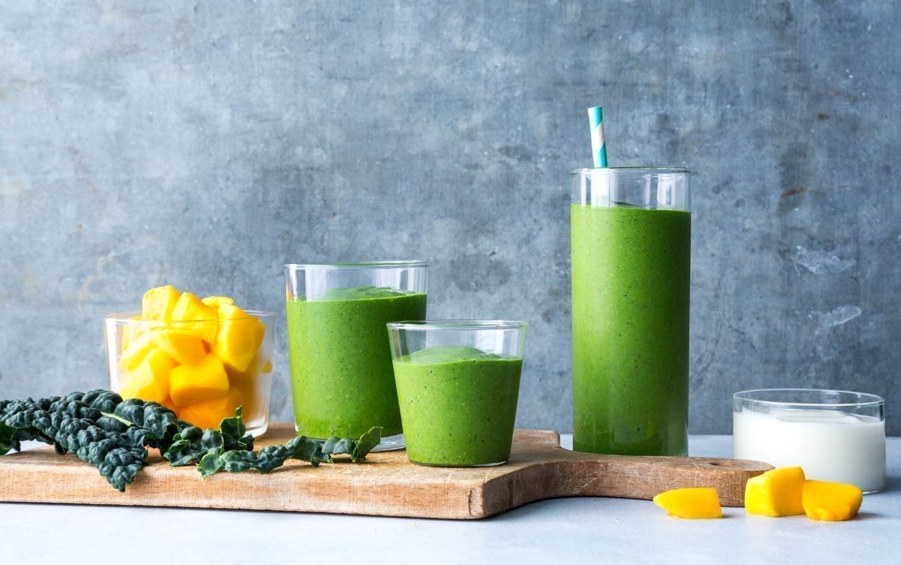

Mango Kale Smoothie
back to home
I make this smoothie almost every morning before work. It's such a simple way to pack in so many of the nutrients your body needs
without much thought or preparation—and it takes fantastic.

Ingredients
- 2 leaves of kale, de-stemmed
- 1 scoop of peanut butter, or any nut butter of your choosing
- 1 frozen banana, peeled
- 1 cup of almond, oat, or soy milk
- 1/4 cup of sunflower seeds
- 1 tbsp of flaxseed meal
- 1 cup of frozen mangoes, cubed
- 1/2 tsp of turmeric
Instructions
- Combine all the ingredients in a blender, and blend!
- Enjoy.